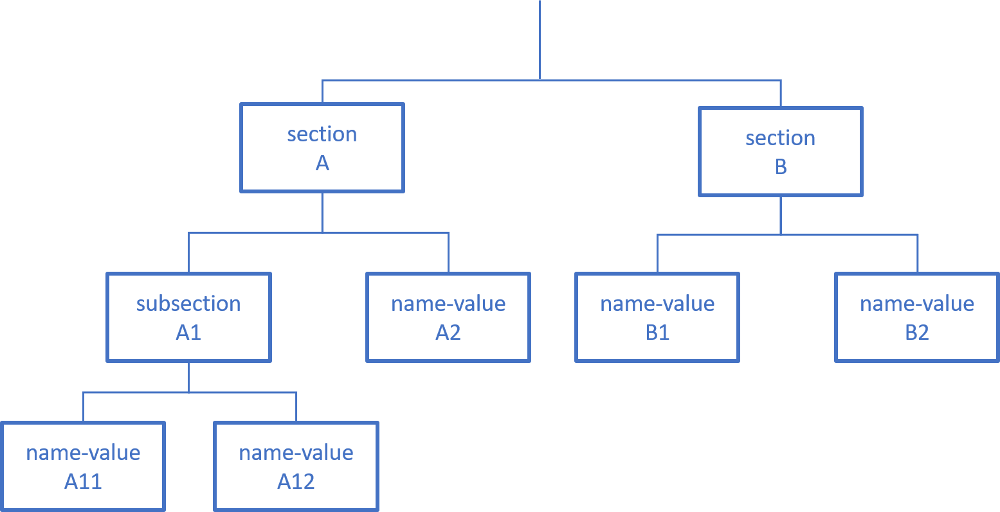

Network Configuration
Identity Manager's network technical configuration includes:
-
Database connection
-
Managed systems connection
-
Synchronization and fulfillment processes
-
End-user authentication
-
Logging
Introduction
Configuration settings are saved in configuration files or in the host system's environment variables.
Configuration settings are detailed further in the following sections:
-
Server configuration, including connection to the database and end-user authentication. See the Server Configuration topic for additional information.
-
Agent configuration, including connection to the managed systems. See the Agent Configuration topic for additional information.
-
Monitoring, indicating how to set up monitoring for Identity Manager. See the Monitoring topic for additional information.
Write Settings
How to write settings for the network configuration.
Sets, sections and values
Configuration setting values are organized by functionality into three sets:
- The Server's appsettings set gathers general-purpose settings for the Server (including database connection and end-user authentication). See the Server Configuration topic for additional information.
- The Agent's appsettings set gathers general-purpose settings for the Agent executable process. See the Application Settings topic for additional information.
- The appsettings.agent set gathers settings for the Agent's connection to the managed systems. See the appsettings.agent topic for additional information.
Each set can be seen as a tree-like structure where leaves are a name-value pair: the name of the setting and the value of the setting.
Within a Configuration Set Tree, settings are organized into meaningful sections which can be further organized into subsections, leading to a tree-like structure where sections are nodes. For example, settings involving end-user authentication are gathered in the Authentication section, containing another subsection for every authentication method such as OpenId or OAuth.
This means that every setting value either belongs to the settings root node or to a section, itself belonging to a parent section.

Configuration files
Settings can be written as json objects stored in .json files in the Server or Agent working directory.
Relevant files for the Server can be found in the Server working directory:
Relevant files for the Agent can be found in its working directory:
appsettings.jsonappsettings.agent.jsonappsettings.encrypted.agent.jsonappsettings.cyberArk.agent.json
Each setting file is organized into several sections as shown in the Sets, Sections and values diagram. See the Architecture topic for additional information.
Each section's name matches a top level attribute of the file's json object.
The section content is written as the matching attribute's value which can be broken down into a set of setting attributes and subsection attributes.
Each subsection can then be broken down into more setting attributes and deeper nested subsections.
Code attributes enclosed with <> need to be replaced with a custom value before entering the script in the command line.
settings.example.json
{
"sectionA": {
"subsectionnameA1":{
"settingnameA11":"settingA11value",
"settingnameA12":"settingA12value"
},
"settingnameA2": "settingvalueA2",
},
"sectionB": {
"settingnameB1": "settingB1value",
"settingnameB2": "settingB2value"
}
}In Integrated-agent mode, agent configuration is written to the Server's appsettings.json file. See the
Overview
topic for additional information.
Reminder
The backslash character \ is an escape character in a JSON file. An error will appear when parsing the JSON file if the backslash is followed by a non-escapable character. To use a backslash in a string, it must be escaped by another backslash.
In this example, the value for the attribute Password will be parsed as <pass\\word>:
Code attributes enclosed with <> need to be replaced with a custom value before entering the script in the command line.
{
"Password": "<pass\\word>"
}Environment variables
Alternatively, settings can be stored as environment variables on Identity Manager's host system.
Each setting value is stored as the value of an environment variable whose name is the concatenation of all the ancestor sections and the setting name separated by __ (two underscores).
Here is an example showing how to construct a setting environment variable name from its matching json file.
Code attributes enclosed with <> need to be replaced with a custom value before entering the script in the command line.
{
"Scheduler": {
"Enabled": true,
"LockFilePath": "../Temp/scheduler.lock"
},
"Swagger": {
"Enabled": true
}
}The name becomes Scheduler__Enabled, Scheduler__LockFilePath and Swagger__Enabled.
Manage Several Environments
How to manage several network environments.
Using files
Every setting value can be overwritten to fit a specific environment.
The environment within which Identity Manager runs is set by the system environment variable ASPNETCORE_ENVIRONMENT. The default value is Production. Usual examples include Development, Staging, and Production.
To overwrite setting values for a specific environment, one can write environment-specific configuration files.
For every appsettings.<xxx>.json file, an appsettings.<xxx>.<environment>.json can be created where <environment> is the name of the relevant environment matching the ASPNETCORE_ENVIRONMENT value.
The appsettings.<xxx>.<environment>.json file has the exact same section/attribute/subsection shape as the main appsettings file.
Identity Manager's configuration will be the result of merging both files.
Should a setting be written in both files, Identity Manager will use the appsettings.<xxx>.<environment>.json value.
Leveraging this priority mechanism is how one can override a setting value to match a particular environment. Another mechanism can be used: using environment variables.
Using environment variables
Setting values can also be stored as environment variables on Identity Manager's host system. Environment-variables-stored setting values have priority over json-file-stored setting values. Here is how to use this mechanism to handle multiple environments.
In the web.config file, an <environmentVariable> element in the node <configuration><system.webServer><aspNetCore><environmentVariables> is used to set a setting value for the application.
Configuration stages
Configuration encompasses:
- The Server configuration with a connection to the database and end-user authentication. See the Server Configuration topic for additional information.
- The Agent configuration with a connection to the managed systems. See the Agent Configuration topic for additional information.
- The Logger configuration. See the Monitoring topic for additional information.